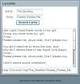
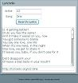

LyricWiki 維基歌詞工具
專門用來找歌詞的工具，特別是為了LyricWiki的使用者設計的。
- 主要目標：提供一個簡單好用的找歌詞辦法。
- 次要目標：提供一個華麗豐富的瀏覽歌詞辦法。
◎最新工具庫 - 版本 1.0
喜歡的話，你可以將網頁加入最愛，或是下載 Flash 回家(檔案大小390KB) 點我下載 lyric.swf。
◎預覽畫面
雖然這沒什麼必要，因為你開網頁就看得到畫面了。
不過為了「有圖有真相」，以及符合許多人看網頁的習慣（試用軟體／網路應用前，先看預覽畫面如何，再做評估）。
這邊還是截了兩張圖出來，分別是 "The Beatles, Please Please Me" ，以及 "U2, One" 的搜尋結果：


◎特色（為什麼你要使用它）
- 免費
-本專案以及維基歌詞，都是免費使用的。
- 開放
-你可以看到本專案所有的程式碼。這意味著本專案可以被大眾公開檢驗，無病毒、無木馬、無惡意程式。
-維基歌詞則是使用MediaWiki（和維基百科一樣），並且開放API，所有歌詞都可以被全世界任何組織、個人存取。
這意味著會有更多以它為基礎的「延伸應用」，本專案只是其中之一的小應用。
- 自由
-你有很大的權利，可以再度編修本專案，甚至以你的名義再度公開發行（在同樣的授權基礎下）。
-至於維基歌詞，你不必註冊會員，直接就可以建立／修正歌詞，系統將記錄你的 IP。
- 穩定
-本網站架設在GooglePage，除非Google倒了，不然你永遠不會遇到「錯誤代碼404-找不到網頁」的情況。
-維基歌詞是全世界第七大的維基系統，並且穩定成長中。
- 跨平台
-由於是Web-Based，任何作業系統、任何瀏覽器（有裝Flash Player的），都可以直接使用（不需安裝）。
◎常見問題
- 為什麼中文歌曲顯示亂碼？
這是LyricWiki XML語言編碼有問題，這個問題已經回報，等待處理中。 已解決，應該不會有這個問題了。
- 找不到歌詞怎麼辦？
大部分的英文歌、日文歌應該都找得到（中文歌還少得可憐），如果你確定沒拼錯字，那可能就真的沒有這筆資料。
只好請你去Google或其他歌詞網站找囉。不過如果你找到歌詞了，歡迎你去創建條目，方便下個查詢者。
- 歌詞有錯怎麼辦？
Flash底下有連結，直接到那個連結去修改即可。操作跟維基百科一樣。
- 我用千千靜聽、MiniLyrics、Winamp & Foobar外掛，都已經可以幫我找歌詞，我還需要這個東西嗎？
動態歌詞很好用，我也有在用。不過這個歌詞工具不是用來取代他們，而是補強作用。
有時候我們只想簡單找首歌詞而已。事實上，LyricWiki也有Winamp、Foobar等諸多外掛。
◎程式原始碼
本專案全部開放原始碼，採用創用CC－姓名標示─非商業性─相同方式分享 2.5 台灣（你可以忽略"姓名標示"的部分）。
網頁請直接右鍵看原始碼。 Adobe Flex 3 Flash 原始碼請點我觀看。
◎相關連結
．LyricWiki 維基歌詞－官方網站
．LyricWiki 維基歌詞－中文歌詞補完計畫
．給我歌詞 - Lyricwiki
Last Update: 2008/11/28
Create by: tomin (
Talk)
語系：繁體中文/
English